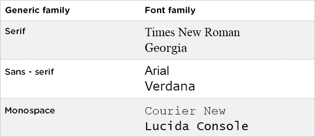

Nesse modo a tag style é utilizada no head do html usando o seletor, seguido, entre chaves, por propriedade e valor de forma semelhante ao arquivo externo CSS. O estilo é utilizado em todos os elementos especificados no seletor, assim como é feito no arquivo CSS.
No modo inline o style é usado como atributo ao invés de tag. É utilizado no próprio elemento html a se adotar o estilo desejado.
This is an example of inline styling.
No modo externo, um arquivo CSS é criado e referenciado no html com a tag link seguida dos seguintes tributos rel="stylesheet" type="text/css" href="css/style.css"
Existem os grupos genéricos de fonte e os tipos específicos de fonte. Normalmente, no arquivo css é utilizado as fontes por ordem de especificidade, para caso de incompatibilidade com o navegador. Então, geralmente a última especificação de fonte seria a fonte genérica.
É importante ressaltar que quando o nome da fonte possui mais de uma palavra o nome deve ser colocado entre aspas.
Parágrafo com fonte com serif. "Times New Roman" ou Times.
Parágrafo com fonte sem serif. Helvetica ou Arial.
Parágrafo em fonte monospace. "Courier new" ou Courier
Parágrafo em fonte com letra cursiva (Cursive).
Parágrafo em fonte fantasy.
Podemos ter diferentes tamanhos de fontes. Há mais de uma maneira de ajustar o tamanho da fonte. O tamanho da fonte pode ser em medidas de pixels, percentual, descritivas entre outras.
XX-Small
X-Small
Small
Medium
Large
Larger
X-Large
XX-Large
A medida também pode ser dada em pixel ou em, que é uma medida relativa ao tamanho padrão de fonte que é 16px. Isto é, 1em=16px
As fontes podem ser em negrito ou Itálico ou normal
Os estilos de fonte podem ser definidas diretamente no html ou em CSS.
A tag i configura o texto em itálico no html enquanto no css é utilizado a propriedade font-style.
A tag b é utilizada para negrito.
No CSS, o negrito se obtém utilizando a propriedade font-weight, e os valores podem ser numerações que vão de 100 a 900 ou escritos como lighter, bold ou bolder.
Lighter é utilizada para uma letra mais fina. Equivalente ao 100.
A numeração 400 equivale à espessura padrão.
A numeração 700 ou bold equivale à espessura negrito, tag b em html.
A numeração 900 ou bolder equivale à espessura super negrito.
Podemos mudar a cor do texto utilizando a propriedade color e a cor pode ser determinada pelo modo RGB, em valor hexadecimal ou pelo nome da cor
Vermelho - rgb(255,0,0)
Verde - #00ff00
Azul - blue
Left - O parágrafo é alinhado à esquerda.
Right - O parágrafo é alinhado à direita.
Center - O parágrafo fica centralizado.
Quando o alinhamento de texto é justificado, utiliza o valor justify. Nesse caso, cada line é esticada de forma que todas linhas tenham comprimentos iguais e as margens tenham o mesmo tamanho, semelhante a textos de jornais e revistas.
| Top | Middle | Bottom |
| Top | Middle | Bottom |
Também há outras formas de mudar a altura do texto com a propriedade vertical-align.
This is an inline text example.
This is a sub line text example.
This is a super line text example.
This is a pixel example.
Este é o estilo de decoração padrão (none).
Este texto herda a decoração do elemento parente - inherit.
Este é um texto sobrelinhado - overline.
Este texto é sublinhado - underline.
Este texto é riscado - line-through.